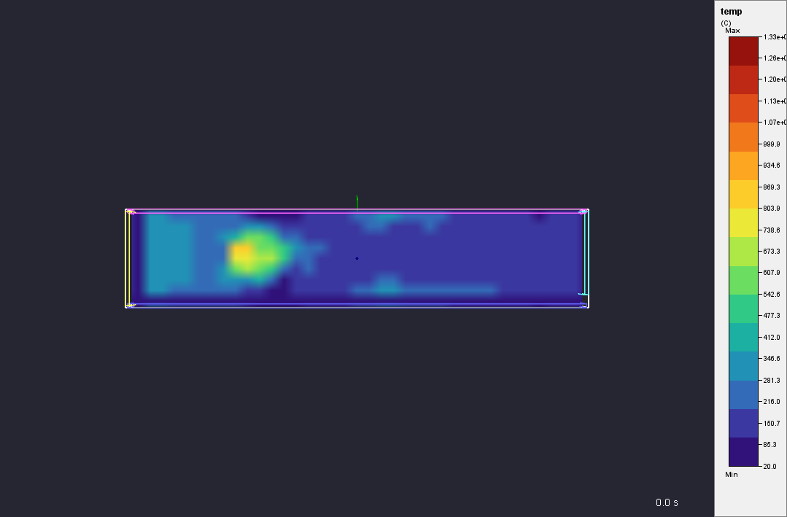
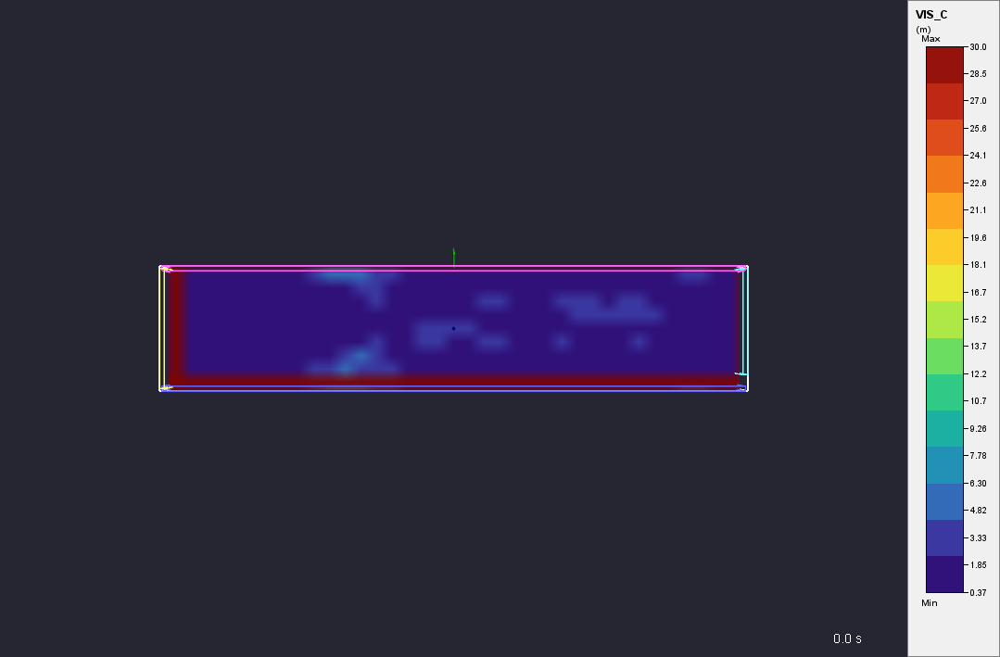
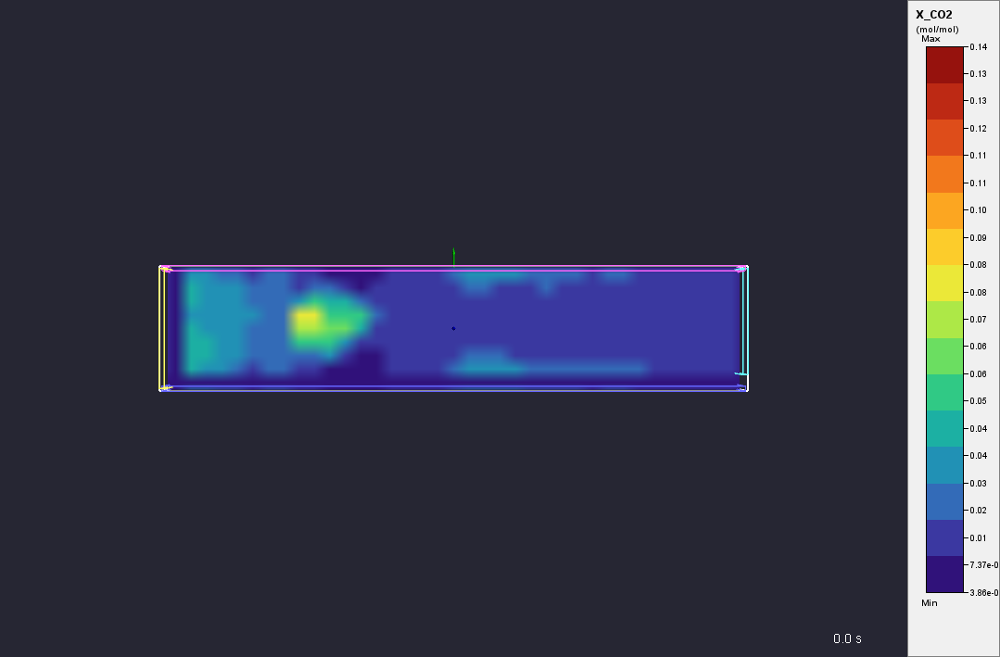
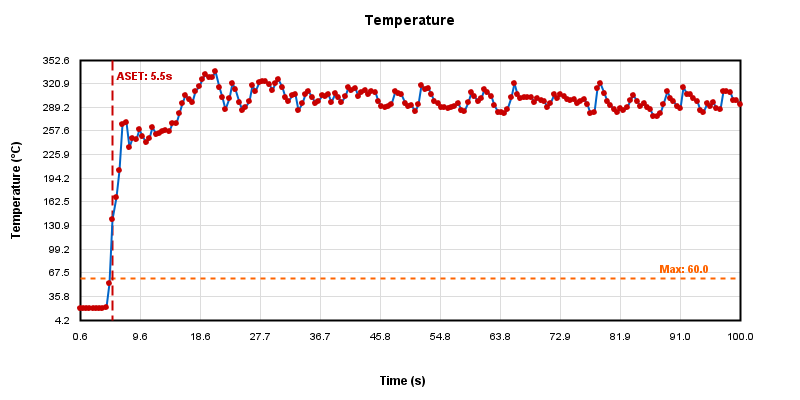
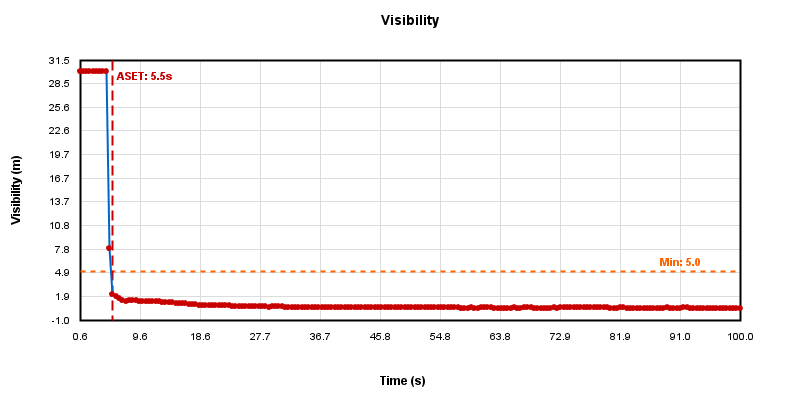
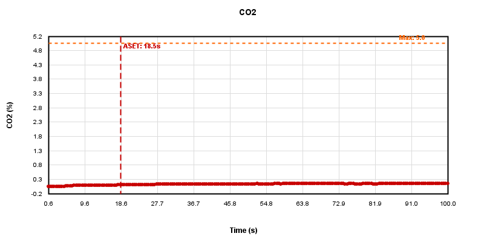
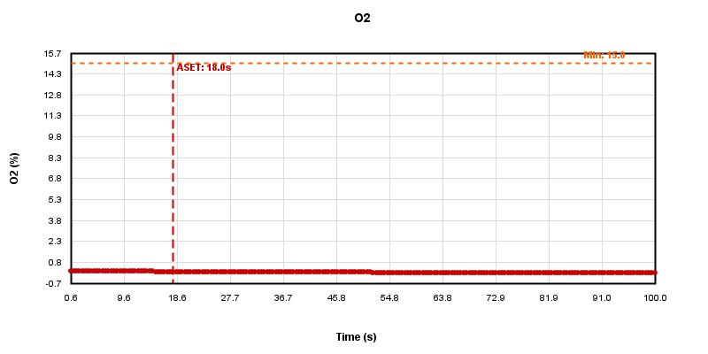

ASET ANALYSIS REPORT
Available Safe Egress Time Assessment
Table of Contents
1.Executive Summary
2.Introduction to ASET Analysis
3.FDS Configuration and Simulation Setup
4.Fire Scenario Description
5.Tenability Criteria and Scientific Basis
6.ASET Calculation Methodology
7.Analysis Results
8.Slice Visualizations at Exit Height
9.Time-Series Graphs with Threshold Lines
10.Discussion and Safety Margin Analysis
11.Recommendations
12.References
13.Appendices
1. Executive Summary
This report presents a comprehensive Available Safe Egress Time (ASET) analysis conducted using Fire Dynamics Simulator (FDS) computational fluid dynamics modeling. The analysis evaluates the time available for safe evacuation before untenable conditions develop at the designated exit location.
ASET Result
Available Safe Egress Time: 5.5 seconds
Critical Failure: Temperature
The analysis indicates that untenable conditions develop at 5.5 seconds due to Temperature exceeding safe limits. This ASET value must be compared with Required Safe Egress Time (RSET) to determine if the building design provides adequate safety margins.
Key Findings
- Exit Location: (8.00, 3.00, 1.80) meters (X, Y, Z coordinates at breathing zone height)
- Analysis Method: FDS computational fluid dynamics simulation with Plot3D data extraction
- Tenability Assessment: Five physiological criteria evaluated (temperature, visibility, CO₂, CO, O₂)
- Safety Approach: Performance-based design per NFPA 101 and ISO/TR 16738 guidelines
2. Introduction to ASET Analysis
2.1 Performance-Based Fire Safety Design
Performance-based fire safety design represents an engineering approach that evaluates building safety through quantitative analysis rather than prescriptive code compliance. The fundamental safety criterion is expressed as:
2.2 ASET Definition and Significance
ASET represents the time interval from fire ignition to the onset of untenable conditions at a specified location. Untenable conditions are defined as environmental parameters that would prevent safe egress or cause incapacitation of building occupants. The ASET analysis employs multiple physiological criteria based on toxicological and thermal tolerance research.
This analysis uses Fire Dynamics Simulator (FDS), a computational fluid dynamics (CFD) model developed by the National Institute of Standards and Technology (NIST), to predict the fire environment evolution. FDS solves the Navier-Stokes equations for low-speed, thermally-driven flows with an emphasis on smoke and heat transport from fires.
2.3 Regulatory Framework
This ASET analysis follows internationally recognized standards and guidelines:
- NFPA 101: Life Safety Code - Performance-based design options (Chapter 5)
- ISO/TR 16738: Fire safety engineering - Technical information on methods for evaluating behavior and movement of people
- ISO/TS 13571: Life-threatening components of fire - Guidelines for the estimation of time to compromised tenability in fires
- SFPE Handbook: Society of Fire Protection Engineers engineering methods
3. FDS Configuration and Simulation Setup
3.1 Fire Dynamics Simulator Overview
Fire Dynamics Simulator (FDS) is a large-eddy simulation (LES) code developed by NIST for modeling fire-driven fluid flow. The model numerically solves a form of the Navier-Stokes equations appropriate for low-speed, thermally-driven flow with an emphasis on smoke and heat transport.
3.2 Computational Domain and Mesh
Mesh Resolution Criteria:
- D*/δx ratio: The characteristic fire diameter (D*) to cell size (δx) ratio should typically be between 4 and 16 for adequate plume resolution
- Characteristic fire diameter: D* = (Q̇/ρ∞cpT∞√g)2/5
- Cell aspect ratio: Grid cells should have aspect ratios close to 1:1:1 in critical regions
3.3 Simulation Parameters
Numerical Methods:
- Turbulence model: Large Eddy Simulation (LES) with Deardorff subgrid-scale model
- Radiation solver: Finite volume method with gray gas assumption
- Time integration: Second-order accurate explicit Runge-Kutta scheme
- Pressure solver: Fast Fourier Transform (FFT)-based direct solver
3.4 Output Quantities
The simulation generates Plot3D format output files containing three-dimensional field data for the following quantities at regular time intervals:
- Temperature (°C): Gas phase temperature field
- Visibility (m): Calculated from smoke extinction coefficient
- CO₂ Volume Fraction: Carbon dioxide concentration
- CO Concentration (ppm): Carbon monoxide concentration
- O₂ Volume Fraction: Oxygen concentration
3.5 Boundary Conditions
The simulation employs the following boundary conditions:
- Walls: Adiabatic or heat transfer boundaries with specified thermal properties
- Openings: Open boundary conditions allowing natural ventilation
- Initial conditions: Ambient temperature (20°C) and atmospheric pressure
4. Fire Scenario Description
4.1 Fire Source Characteristics
The fire scenario includes combustible materials configured with heat release rate per unit area (HRRPUA) specifications. The fire growth follows the defined ramp function or constant heat release rate.
4.2 Heat Release Rate (HRR)
The heat release rate is the single most important parameter in fire hazard analysis. It represents the rate of energy release due to combustion and drives the fire-induced flows:
4.3 Combustion Products
The combustion process generates products that affect tenability:
- Carbon Dioxide (CO₂): Primary combustion product; elevated levels cause increased respiration rate and reduced egress capability
- Carbon Monoxide (CO): Toxic gas produced under oxygen-limited conditions; interferes with oxygen transport in blood
- Oxygen Depletion: Combustion consumes oxygen, potentially reducing O₂ concentration below safe breathing levels
- Smoke Particulates: Reduce visibility and cause respiratory irritation
4.4 Fire Growth and Development
Fire growth typically follows characteristic phases:
- Incipient Phase: Initial ignition and slow growth
- Growth Phase: Accelerating fire development (often following t² growth for design fires)
- Fully Developed: Peak heat release rate
- Decay Phase: Fuel-limited reduction in HRR
For performance-based analysis, design fires are often characterized by t-squared growth curves:
5. Tenability Criteria and Scientific Basis
Tenability criteria define the environmental conditions beyond which building occupants cannot safely egress. These criteria are based on extensive physiological research and are specified in ISO/TS 13571 and other fire safety engineering standards.
Temperature
< 60.0 °C
Upper thermal tolerance limit for exposed skin and respiratory tract
Visibility
> 5.0 m
Minimum visibility required for wayfinding and egress
CO₂
< 5.0 %
Carbon dioxide threshold before hyperventilation effects
CO
< 1400.0 ppm
Carbon monoxide limit to prevent incapacitation
O₂
> 15.0 %
Minimum oxygen concentration for normal respiration
5.1 Temperature Effects
Thermal Tolerance Limits:
- 60°C: Conservative limit for clothed individuals during short-duration exposure (ISO/TS 13571 recommendation)
- Skin burns: Occur at temperatures above 44°C with prolonged exposure (pain threshold ~43°C)
- Respiratory tract damage: Inhalation of hot gases above 60°C can cause airway burns and edema
The fractional effective dose (FED) for convective heat exposure is calculated as:
5.2 Visibility Through Smoke
Visibility and Egress Capability:
- 5m visibility: Minimum for unfamiliar occupants to identify exit signs and navigate corridors
- 3m visibility: Limit for familiar occupants in known environments
- Walking speed reduction: Movement slows significantly below 10m visibility
Visibility is calculated from the smoke extinction coefficient:
5.3 Carbon Dioxide (CO₂)
Physiological Effects:
- Normal atmospheric: 0.04% (400 ppm)
- 1-2%: Noticeable respiratory stimulation
- 3-5%: Significant hyperventilation, headache, increased breathing rate (doubles at 3%)
- >5%: Severe physiological stress, impaired egress capability
Elevated CO₂ acts as a respiratory stimulant, causing occupants to breathe more deeply and rapidly, which increases the uptake of other toxic gases. The 5% threshold represents a conservative limit before significant performance degradation.
5.4 Carbon Monoxide (CO)
Toxicity Mechanism:
Carbon monoxide binds to hemoglobin with 200-250 times the affinity of oxygen, forming carboxyhemoglobin (COHb) and reducing oxygen transport capacity in blood. The fractional effective dose for CO is calculated using the CO exposure dose (CED) model:
Exposure Effects:
- 400 ppm: Headache after 1-2 hours
- 800 ppm: Dizziness, nausea after 45 minutes
- 1400 ppm: Conservative tenability limit (5-10% COHb after 10-15 minutes)
- 3200 ppm: Headache, impaired judgment within 10 minutes
- 6400 ppm: Incapacitation within 10-15 minutes
5.5 Oxygen Depletion
Hypoxia Effects:
- Normal atmospheric: 21% (20.95% O₂)
- 17-19%: Mild symptoms - increased heart rate and breathing
- 15-17%: Impaired coordination, rapid fatigue, respiratory distress
- 12-15%: Poor judgment, poor coordination, labored breathing
- <12%: Severe incapacitation risk
The 15% threshold provides a conservative safety margin. Oxygen depletion primarily occurs in confined spaces with significant fire loads and limited ventilation.
6. ASET Calculation Methodology
6.1 Primary ASET Equation
ASET is determined as the earliest time at which any tenability criterion is exceeded:
6.2 Data Extraction from FDS Simulation
The ASET analysis extracts time-series data at the specified exit location from FDS Plot3D output files. The process involves:
- Coordinate Transformation: Converting physical exit coordinates (X, Y, Z) to FDS grid indices (i, j, k)
- Trilinear Interpolation: Extracting values at the exact exit position using interpolation between surrounding grid cells
- Time-Series Assembly: Collecting data at each output timestep throughout the simulation
- Threshold Comparison: Comparing each variable against its tenability limit at each timestep
6.3 Trilinear Interpolation
Since the exit location may not align with grid cell centers, trilinear interpolation provides accurate values at arbitrary positions within the computational domain:
6.4 Safety Margin Analysis
The safety margin represents the difference between ASET and RSET:
7. Analysis Results
7.1 ASET Summary
Tenability Limit Exceeded
ASET Time: 5.5 seconds
Failed Criterion: Temperature
Untenable conditions developed at 5.5 seconds after ignition due to Temperature exceeding safe limits at the exit location.
7.2 Individual Criterion Results
| Criterion |
Threshold |
Exceedance Time |
Status |
| Temperature |
< 60.0 °C |
5.5 s |
✗ FAIL |
| Visibility |
> 5.0 m |
5.5 s |
✗ FAIL |
| CO₂ |
< 5.0 % |
18.5 s |
✗ FAIL |
| CO |
< 1400.0 ppm |
Not exceeded |
✓ PASS |
| O₂ |
> 15.0 % |
18.0 s |
✗ FAIL |
7.3 Exit Location Details
| Parameter | Value |
|---|
| X Coordinate | 8.00 m |
| Y Coordinate | 3.00 m |
| Z Coordinate (Height) | 1.80 m |
| Location Description | Breathing zone at exit point |
8. Slice Visualizations at Exit Height
The following visualizations show horizontal slices at Z = 1.80 m (breathing zone height) for each tenability parameter. The red crosshair marker indicates the exit location where ASET was evaluated.
8.1 Temperature

Figure 1: Temperature distribution showing thermal stratification and hot gas layer development
8.2 Visibility

Figure 2: Visibility through smoke showing areas of optical obscuration
8.3 CO2

Figure 3: Carbon dioxide concentration showing combustion product distribution
8.4 CO
Figure 4: Carbon monoxide concentration showing toxic gas accumulation
8.5 O2

Figure 5: Oxygen concentration showing vitiation and depletion zones
9. Time-Series Graphs with Threshold Lines
Time-series graphs show the evolution of each tenability parameter at the exit location throughout the simulation. Orange horizontal lines indicate threshold values. Red vertical lines mark the time when criteria are exceeded (if applicable).
9.1 Temperature Time-Series

Figure 6: Temperature vs. time showing thermal environment development
9.2 Visibility Time-Series

Figure 7: Visibility vs. time showing smoke obscuration progression
9.3 CO2 Time-Series

Figure 8: CO₂ concentration vs. time showing combustion product accumulation
9.4 CO Time-Series

Figure 9: CO concentration vs. time showing toxic gas buildup
10. Discussion and Safety Margin Analysis
10.1 ASET Interpretation
The analysis reveals that untenable conditions develop at the exit location after 5.5 seconds. The critical failure mode is Temperature, which reaches its tenability limit first among all evaluated criteria.
This ASET value must be compared with the Required Safe Egress Time (RSET) calculated from evacuation modeling to assess overall building safety:
Safety Assessment Required
Required Condition: ASET > RSET + Safety Factor
NFPA 101 and ISO/TR 16738 recommend maintaining a safety margin of 1.5-2.0 times RSET to account for uncertainties in:
- Occupant response time variability
- Fire growth rate uncertainties
- Model prediction accuracy
- Evacuation flow variations
10.2 Model Limitations and Uncertainties
FDS Model Uncertainty Factors:
- Grid resolution: Coarse grids may under-predict peak temperatures and over-predict smoke dilution (±20-30% typical uncertainty)
- Combustion modeling: Simplified chemistry and soot formation models introduce uncertainty in CO and visibility predictions
- Turbulence modeling: LES subgrid-scale models affect mixing and transport predictions
- Radiation modeling: Gray gas assumption and angular discretization affect radiative heat transfer accuracy
- Input parameters: Fuel properties, HRR curves, and boundary conditions contain inherent variability
Validation and Verification:
FDS has been extensively validated against experimental data for various fire scenarios. NIST validation studies show temperature predictions typically within ±15% and heat flux predictions within ±25% of measured values. However, model accuracy depends strongly on grid resolution, fire scenario complexity, and proper input specification.
10.3 Design Implications
The calculated ASET of 5.5 seconds provides a quantitative basis for evaluating design alternatives:
- Fire protection systems: Earlier detection and suppression can extend ASET
- Ventilation design: Smoke management systems can improve visibility and reduce toxicity
- Exit geometry: Relocating exits or adding redundant egress paths
- Fire resistance: Compartmentation to limit fire spread
- Material selection: Low-smoke, low-toxicity materials can improve ASET
11. Recommendations
11.1 Required Actions
Critical Action Items
- Conduct RSET Analysis: Complete evacuation modeling to calculate required egress time and compare with ASET
- Verify Safety Margin: Ensure ASET - RSET ≥ 1.5 × RSET (minimum 50% margin)
- Evaluate Design Options: If safety margin is insufficient, consider fire protection enhancements or egress improvements
- Sensitivity Analysis: Test variations in fire location, HRR, and ventilation conditions
11.2 Model Refinement Opportunities
- Grid refinement: Perform mesh sensitivity study to ensure grid-independent results (D*/δx ≥ 10 recommended)
- Multiple exit points: Analyze ASET at all critical exit locations, not just a single point
- Transient occupancy: Consider ASET along egress paths, not just final exit locations
- Detector activation: Include smoke detector response to account for alarm delay in RSET
11.3 Documentation Requirements
For regulatory approval and peer review, the following documentation should be prepared:
- Complete FDS input file with annotated parameter selections
- Justification for design fire scenarios (HRR, location, fuel properties)
- Grid resolution verification study
- RSET analysis report with evacuation simulation results
- Safety margin calculation and sensitivity analysis
- Comparison with prescriptive code requirements
12. References
-
NFPA 101, Life Safety Code, 2021 Edition. National Fire Protection Association, Quincy, MA.
-
NFPA 92, Standard for Smoke Control Systems, 2021 Edition. National Fire Protection Association, Quincy, MA.
-
ISO/TR 16738:2009, Fire safety engineering — Technical information on methods for evaluating behavior and movement of people. International Organization for Standardization.
-
ISO/TS 13571:2012, Life-threatening components of fire — Guidelines for the estimation of time to compromised tenability in fires. International Organization for Standardization.
-
McGrattan, K., et al., Fire Dynamics Simulator Technical Reference Guide, NIST Special Publication 1018-1, Sixth Edition. National Institute of Standards and Technology, Gaithersburg, MD, 2021.
-
McGrattan, K., et al., Fire Dynamics Simulator User's Guide, NIST Special Publication 1019, Sixth Edition. National Institute of Standards and Technology, Gaithersburg, MD, 2021.
-
Hurley, M.J., et al., SFPE Handbook of Fire Protection Engineering, Fifth Edition. Society of Fire Protection Engineers, Bethesda, MD, 2016.
-
Purser, D.A., "Toxicity Assessment of Combustion Products," SFPE Handbook of Fire Protection Engineering, Fifth Edition, pp. 2308-2428, 2016.
-
Jin, T., "Visibility Through Fire Smoke," Journal of Fire and Flammability, Vol. 9, pp. 135-157, 1978.
-
Babrauskas, V., Ignition Handbook. Fire Science Publishers, Issaquah, WA, 2003.
-
Tewarson, A., "Generation of Heat and Chemical Compounds in Fires," SFPE Handbook of Fire Protection Engineering, Fifth Edition, pp. 1966-2043, 2016.
-
Peacock, R.D., et al., CFAST – Consolidated Fire and Smoke Transport (Version 7) Technical Reference Guide, NIST Technical Note 1889v1. National Institute of Standards and Technology, Gaithersburg, MD, 2015.
-
Nelson, H.E., and Mowrer, F.W., "Emergency Movement," SFPE Handbook of Fire Protection Engineering, Third Edition, pp. 3-367 to 3-380, 2002.
-
Gwynne, S.M.V., and Rosenbaum, E.R., "Employing the Hydraulic Model in Assessing Emergency Movement," SFPE Handbook of Fire Protection Engineering, Fifth Edition, pp. 2115-2151, 2016.
-
Bukowski, R.W., "Emergency Egress from Buildings, Part 1: History and Current Regulations," Journal of Fire Protection Engineering, Vol. 19, No. 4, pp. 249-269, 2009.
13. Appendices
Appendix A: Tenability Criteria Summary
| Parameter | Threshold | Basis |
|---|
| Temperature | < 60.0 °C | ISO/TS 13571 thermal tolerance limit |
| Visibility | > 5.0 m | Unfamiliar occupants, illuminated signs |
| CO₂ | < 5.0 % | Hyperventilation and performance degradation |
| CO | < 1400.0 ppm | 10-15 min exposure without incapacitation |
| O₂ | > 15.0 % | Hypoxia effects and coordination loss |
Appendix C: Glossary
| Term | Definition |
|---|
| ASET | Available Safe Egress Time - time until untenable conditions |
| CFD | Computational Fluid Dynamics - numerical simulation of fluid flows |
| COHb | Carboxyhemoglobin - CO bound to hemoglobin in blood |
| FDS | Fire Dynamics Simulator - NIST fire modeling software |
| FED | Fractional Effective Dose - cumulative exposure metric |
| HRR | Heat Release Rate - energy release rate from combustion (kW) |
| HRRPUA | Heat Release Rate Per Unit Area (kW/m²) |
| LES | Large Eddy Simulation - turbulence modeling approach |
| RSET | Required Safe Egress Time - time needed for evacuation |
| Tenability | Conditions allowing safe egress without incapacitation |